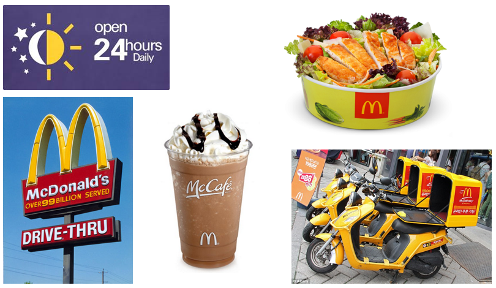
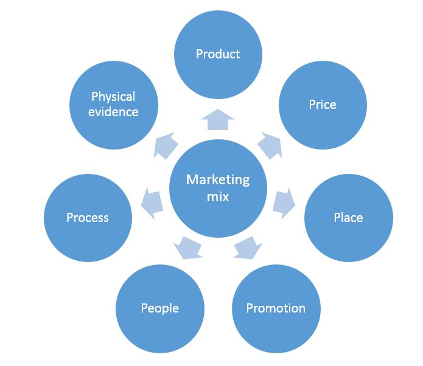
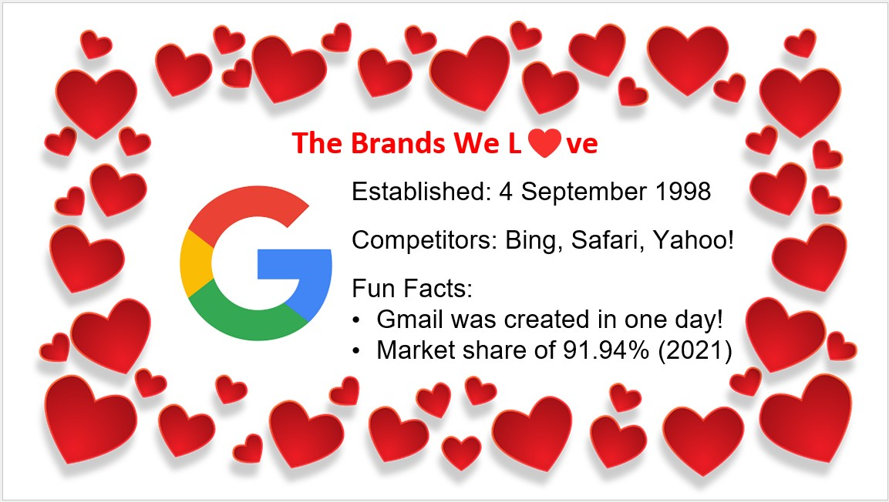
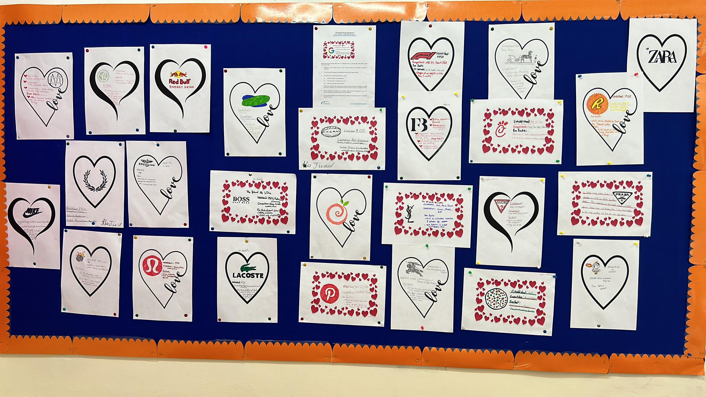

IB Docs (2) Team
IB Docs (2) Team

Appropriate marketing mixes

Goods are physical products, such as handbags, cars, and laptops. Services are intangible products, such as education, haircuts, and train rides. The marketing of physical goods varies from the marketing of intangible services. The marketing of goods involves the traditional marketing mix (product, price, promotion, and place).
Marketers have to ensure the needs and wants of their customers are satisfied by providing suitable products, distributed in the most appropriate places to ensure customer have ease of access to them, ensure adequate awareness and desire to purchase the products through effective promotion, and determine suitable prices to sell their products.
The marketing of services, developed by Bernard H. Booms and Mary J. Bitner (1981), includes three additional elements to the marketing mix: people, process, and physical evidence.
Product – a physical good or an intangible service that is provided by a business.
Price – the value of a good or service that is paid for by the customer.
Promotion – marketing processes used to inform customers about a product and persuade them to buy the product.
Place – the plans and processes of getting the right products to the right customers at the right time.
People – the importance of employee-customer relationships in the marketing of a service.
Processes – the importance of delivery processes in the marketing of a service.
Physical evidence – the importance of tangible physical evidence in the marketing of a service.
The marketing mix refers to all the marketing activities that have a direct or indirect influence on whether a customer decides to buy a particular good or pay for a certain service. It also impacts whether the experience that customers have, thereby determining whether they will return to buy the product again.
An effective marketing mix, be it the traditional 4 Ps for the marketing of goods or the 7 Ps for the marketing of services, helps to ensure that a business meets the needs of their customers. Getting the marketing mix right requires an integrated approach, i.e., all elements of the 7 Ps are complementary (work together) and consistent (reinforce each other). This means the business produces the right product, sells it for the right price, informatively and persuasively communicates the product through the right methods of promotion, and has the product conveniently available at the right place for customers. In addition, the people are appropriate trained in delivering a service, with the right processes to provide quality service, and tangible physical evidence to ensure customer satisfaction.

The marketing mix is an integrated approach to meet the needs and wants of customers
For example, a 5-star hotel with its attractive physical environment (physical evidence) will not meet the needs and wants of customers if there is poor customer service and long delays at the check-in counter. In this case, the people and process elements of the marketing mix do not match the price and physical evidence components of the marketing mix. Similarly, people would not be willing to pay high prices for fast food in a food court of a shopping mall because the price, physical evidence, and product aspects of the marketing mix do not match.
Essentially, the different elements of the marketing mix (4 Ps for goods or 7 Ps for services) must complement each other. The marketing strategies behind the 4 Ps or 7 Ps must also work to reinforce the brand value of the product and/or the business.
In summary:
All elements in the marketing mix must be effectively executed in order a business to succeed. An outstanding product that is not promoted well or is incorrectly priced or poorly distributed will fail to sell well.
Measures of the effectiveness of a marketing mix include the impact on sales revenues, brand recognition, customer loyalty, market share, and profits.
An effective marketing mix enables a business to achieve its marketing objectives, e.g., increased market share, better product positioning, and improved consumer satisfaction.
Business Management Toolkit - SWOT analysis
Explain how a SWOT analysis can support the formation of an improved marketing strategy.
Business Management Toolkit - Ansoff matrix
Discuss the importance of understanding Ansoff's matrix when developing an appropriate marketing mix for a product or a business organization.
Business Management Toolkit - The Boston Consulting Group matrix
Discuss how knowledge of the product portfolio analysis and the Boston Consulting Group matrix can support marketing managers to develop appropriate marketing mixes.
Business Management Toolkit - STEEPLE analysis
Discuss the importance of understanding the external environment when developing an appropriate marketing mix for a product or a business.
You may find it useful to refer to STEEPLE analysis prior to answering this question.
Key concept - Ethics
Using real-world examples, discuss the ethical considerations that may influence marketing practices and strategies in business organizations.
Possible ethical considerations could include a discussion of:
Marketing ethics are the moral aspects of a firm’s marketing practices and strategies. Unethical marketing happens when moral codes of practice are ignored or when marketing activities (such as market research or advertising campaigns) cause offence to the public.
Marketing practices and strategies that ignore ethical considerations are likely to result in negative consequences for a business, e.g., customer complaints, damaged corporate image and a public relations disaster.
The use of unethical marketing, deliberate or unintentional, is a high-risk strategy that can backfire. With the widespread use of social media and social networks, bad publicity is not necessarily better than no publicity for a business.
Examples of unethical marketing practices and strategies include the following:
Bait and switch - marketing methods aimed at luring customers by using advertising deals that are just too good to be true (the bait) who become hooked but find that the product is no longer available so end up buying a more expensive alternative (the switch).
advertising claims - using unproven or untested claims that can mislead and deceive the public, e.g., promoting health benefits and medical cures from the consumption of certain uncertified products.
Product misrepresentation - giving misleading and ambiguous information to customers in order to persuade them to pay for certain goods or services, e.g., inaccurate product descriptions.
Pester power - using children to pressurise their parents to buy certain products, e.g., toys, sweets (candy), fast food, sportswear and mobile apps.
ATL Activity 1 (Communication skills)
In groups of 2 or 3, and with reference to the 7Ps of the marketing mix, recommend an appropriate marketing mix for any two of the following products or businesses. Compare and contrast the various elements of the marketing mix for your two chosen products. Be prepared to present your recommendations to your teacher and the rest of the class.
Premier bank services for high-income clients
Bottled water sold in supermarkets
Ford Mustang sports car
Samsung smartphones
Michelin star restaurant
Family holiday to Bali, Indonesia
Rolex watches
The IB World School you attend
Top tip!
Marketing is an integrated topic and the 7Ps of the marketing mix is often assessed in the exams. Be prepared to consider any combination of the 7Ps if asked to discuss the factors that influence the marketing mix for a product or a business organization.
ATL Activity 2 - The Brands We Love

Whilst this activity works really well on Valentine's Day, it can equally work well on other days of the year.
Research three brands that you love. Choose these from different markets or industries.
Find out some interesting facts/data/information about these brands.
For one of your chosen loved brands, outline: (i) when the brand was established, (ii) who their main competitors are, and (iii) what you love about these brands. Present your findings as creatively as possible, using the heart templates (or create your own). However, do not include the name of the brand (logos or slogans are fine).
Once completed, the class can do a gallery walk around the classroom to see how many of these loved brands can be correctly identified.
For the remaining two loved brands, design suitable social media adverts to show the rest of the class.
Here's an example of the work created by students at English Talents School in Amman, Jordan. Many thanks to their teacher, Luna Hroub, for sharing the wonderful posters that were created.

Teachers can download a PDF version of this activity in the box below.
ATL Activity 3 - The market for bottled fresh air
Read this article from the South China Morning Post about bottled fresh air from New Zealand being sold in China. The article also includes a short YouTube video about this story. Discuss the various elements of the marketing mix featured in the video.
Matt Haig, author of Brand Failures, claims that there is only a 1 in 10 chance of a product becoming a long-term success. Discuss how the marketing mix for such products could have been improved.
Toymaker Mattel launched the Barbie doll back in 1959. Barbiemania hit the world in July 2023 with the release of the widely marketed fantasy comedy film Barbie movie, produced by Warner Bros. More than 100 brands were part of the marketing hype, reaching all kinds of demographics, prior to the movie’s official release. Some of the larger collaborators included Airbnb, Burger King, Crocs, Gap, Google, Xbox, and Zara. In addition, Mattel’s strategic investment in intellectual property (IP) licensing deals resulted in increased sales and profits. Mattel earns between 10% to 20% from these licensing deals, or what the company calls “brand partnerships”.
Mattel’s global head of Barbie, Lisa McKnight, said the brand had one goal for the year: make sure Barbie is “everywhere.” The Barbie marketing strategy, backed by a marketing budget of $100 million, included product tie-ins and viral social media marketing to create a buzz and collaborations beyond traditional movie promotions. Part of the appeal was how many people resonated with the escapism that the movie offered in a post-COVID world. The campaign also involved lead actor Margot Robbie and director Greta Gerwig embarking on a world promotional tour.
Overall, the Barbie marketing strategy generated excitement and customer engagement in world cluttered with advertising. The movie, along with the array of merchandising, is part of Mattel’s corporate strategy to expand the Barbie world beyond dolls and toys, in a similar way to Disney’s monetization of the Marvel franchise. The Barbie movie grossed over $377 million in its first weekend. The Barbie doll remains the best-selling toy of all time, with over a billion dolls sold since its launch over 60 years ago.
| (a) | Define the term intellectual property (IP). | [2 marks] |
| (b) | Explain one benefit of using social media marketing (SMM) as a promotional strategy for Mattel. | [2 marks] |
| (c) | Explain one way in which Mattel differentiates itself and its products from competitors. | [2 marks] |
| (d) | Explain two benefits of businesses collaborating with Mattel as part of its marketing strategy for the Barbie movie. | [4 marks] |
Note to teachers
Question (a) refers to intellectual property, which is a HL-only topic. However, do note that all students (including SL ones) are expected to know and understand the different types of intangible assets (AO2) in Unit 3.4. These are collectively referred to as intellectual property (IP).
For SL students, you may choose to change Question (a) to brands (which appears in the third sentence of the case study). You can click on the icon to see the answer for this alternative question.
(a) Define the term brands. [2 marks]
Answer (for SL students)
(a) Define the term brands. [2 marks]
The term "brands" refers to distinctive and exclusive names, symbols, or logos associated with products or organizations. Brands are used to distinguish and differentiate a firm or its products from others in the market, creating a recognizable and memorable image that resonates with consumers.
Award [1 mark] for a definition that shows partial understanding of the term brands.
Award [2 marks] for a definition that shows good understanding of the term brands, similar to the example above.
Answers
(a) Define the term intellectual property (IP). [2 marks]
Intellectual property (IP) refers to the intangible assets of a business through its creativity and capital expenditure. It encompasses a wide range of intangible assets, such as inventions, innovations, designs, artistic works, symbols, slogans, images, and proprietary knowledge that are products of human creativity and intelligence.
Award [1 mark] for a definition that shows partial understanding of the term intellectual property.
Award [2 marks] for a definition that shows good understanding of the term intellectual property, similar to the example above.
(b) Explain one benefit of using social media marketing (SMM) as a promotional strategy for Mattel. [2 marks]
Possible answers include an explanation of any one of the following:
SMM has a wide reach - Social media platforms have a broad user base, allowing the Barbie marketing team to reach a large and diverse audience across different demographics. This helps to ensure that the promotional messages reach the right people who were more likely to be interested in the Barbie movie and associated products.
SMM has potential to go viral - The use of engaging and shareable content related to the Barbie movie, such as movie trailers, behind-the-scenes footage, and interactive posts on various social media platforms, help to encourage users to share and spread the brand content with their social networks. This word-of-mouth marketing helps to amplify the reach of the Barbie campaign and to generate additional marketing buzz around the movie.
SMM facilitates real-time interaction and customer engagement - Social media platforms facilitate real-time interaction between brands and their audience. The Barbie marketing strategy leveraged this feature by engaging with fans, especially with the world tour to promote the movie. This high level of engagement created a sense of involvement and emotional connection with the Barbie brand, fostering brand loyalty and advocacy.
Accept any other relevant benefit that is explained in the context of the case study.
Award [1 mark] for a valid benefit and a further [1 mark] for a suitable explanation, written in the context of the case study.
(c) Explain one way in which Mattel differentiates itself and its products from competitors. [2 marks]
Possible answers include an explanation of any one of the following:
Strategic brand partnerships and collaborations - Mattel has set itself apart from its competitors by establishing licensing agreements with over 100 brands, including well-known names from Airbnb to Zara in order to expand the reach and appeal of its Barbie products. These collaborations go beyond traditional movie promotions, allowing Mattel to leverage the popularity and credibility of these partner brands to create cross-promotional campaigns.
Multi-platform marketing: The Barbie marketing strategy uses a multi-platform approach, combining product tie-ins, viral social media marketing (SMM), and traditional movie promotions. This comprehensive marketing mix enables Mattel to create a buzz and engage with customers on various levels. By leveraging social media platforms, for example, Mattel ensures that the marketing message reaches a wide and diverse audience..
Expanding the brand beyond dolls and toys - Mattel's corporate strategy involves expanding the Barbie brand beyond dolls and toys. This diversification strategy allows Mattel to capitalize on the strong brand recognition, value, and recognition of Barbie to enter new product categories and markets. By doing so, Mattel would differentiate itself from competitors who may have a much narrower product focus.
Emotional appeal and escapism - The Barbie marketing campaign taps into the emotional appeal of escapism, especially in a post-COVID world. By emphasizing the movie's ability to offer a form of escapism and leveraging lead actor Margot Robbie and director Greta Gerwig for promotional activities, Mattel creates an emotional connection with audiences and customers from across the world. This approach sets Barbie apart by resonating with customers who seek entertainment and distraction from the challenges of reality.
Accept any other relevant method that is explained in the context of the case study.
Award [1 mark] for a valid way or method by which Mattel differentiates itself and a further [1 mark] for a suitable explanation, written in the context of the case study.
(d) Explain two benefits of businesses collaborating with Mattel as part of its marketing strategy for the Barbie movie. [4 marks]
Possible answers include an explanation of any two of the following interrelated points:
Expanded customer reach and brand exposure - Collaborating with Mattel as part of the Barbie movie marketing strategy offers businesses the opportunity to tap into Barbie's extensive and diverse audience. With the Barbie brand having a global presence and a rich history spanning over six decades, businesses can benefit from increased reach and exposure to various demographics and markets. This extended visibility can help to improve brand recognition and potentially attract new customers to their products.
Leveraging Barbie's brand value - As the best-selling toy of all time, the Barbie brand carries substantial brand value and the trust of customers. By associating themselves with Barbie through strategic collaborations, partner businesses can leverage this positive brand image in order to enhance their own corporate reputation. Being associated with a beloved and iconic brand like Barbie can positively impact the perception of their own products, leading to increased sales and profits.
Cross-promotional opportunities - Collaborating with Mattel provides businesses with the opportunity to engage in cross-promotional activities. By aligning their products with the Barbie movie and merchandise, businesses such as Burger King and Crocs can tap into the excitement and hype surrounding the film's release. This cross-promotion can lead to mutual benefits, where the marketing efforts of both Mattel and the collaborating businesses reinforce each other, resulting in greater visibility and consumer interest.
Access to Mattel's intellectual property (IP) licensing - Businesses collaborating with Mattel are allowed to incorporate aspects of the company's characters and themes from the Barbie movie into their own products or marketing campaigns. The association with Barbie can enhance the appeal of their own product offerings, potentially leading to increased sales and market competitiveness.
Creative and innovative marketing - The Barbie marketing strategy for the movie involved a broad range of elements, including product tie-ins, viral social media marketing, and brand partners. By collaborating with Mattel, businesses can be part of these creative and innovative marketing campaigns. This collaboration can help to inject new ideas and creativity into their own marketing mix, helping them to also stand out in a competitive market and capture the attention of their target audience.
Enhancing customer engagement - The Barbie marketing strategy generated much excitement and customer engagement across the globe. By collaborating with Mattel, businesses can benefit from this level of enthusiasm and emotional connection that consumers have with the Barbie brand. Engaging in joint promotional activities can also create a sense of involvement and interest amongst customers, leading to higher levels of engagement and brand loyalty.
Mark as a 2 + 2.
For each point, award [1 mark] for a valid benefit and a further [1 mark] for a suitable explanation, written in the context of the case study, up to the maximum of [4 marks].
Return to the Unit 4.5 - The seven Ps of the marketing mix homepage
Return to the Unit 4 - Marketing homepage

 Twitter
Twitter
 Facebook
Facebook
 LinkedIn
LinkedIn